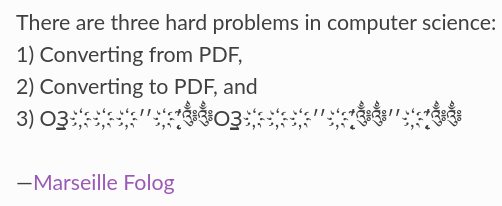
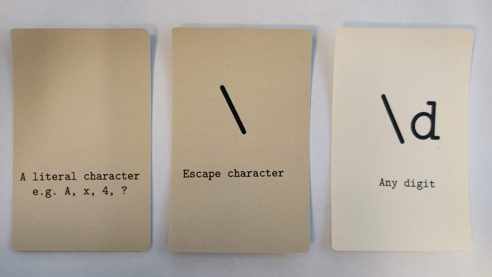
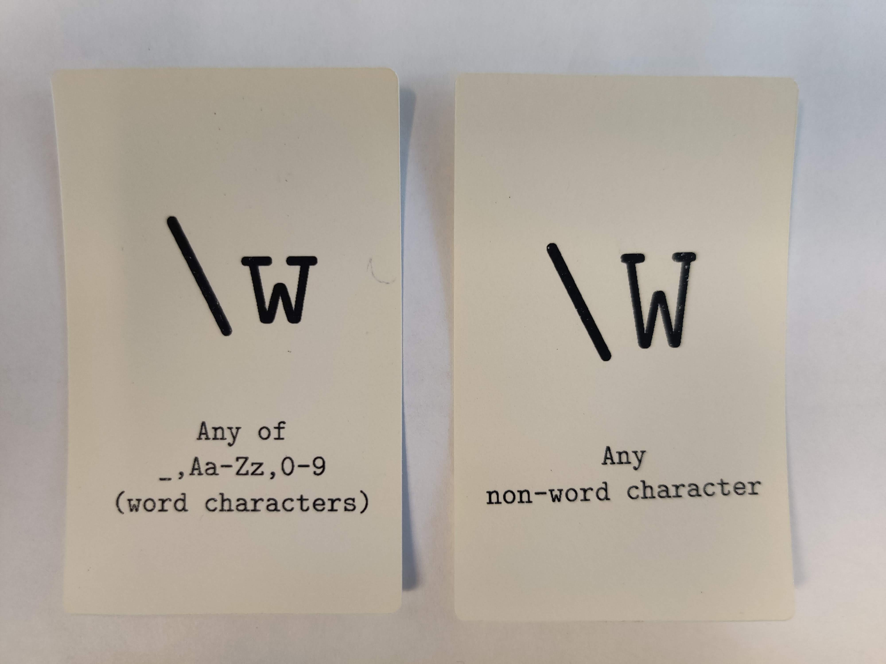
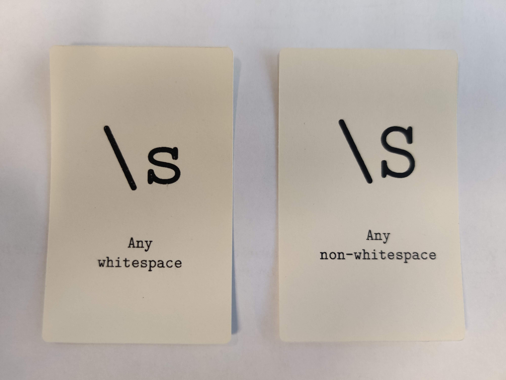
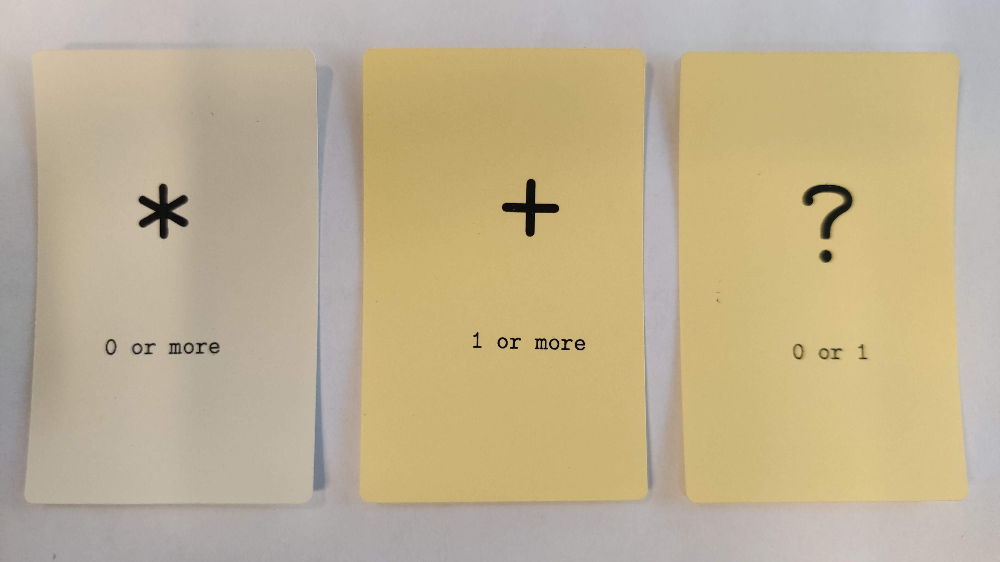
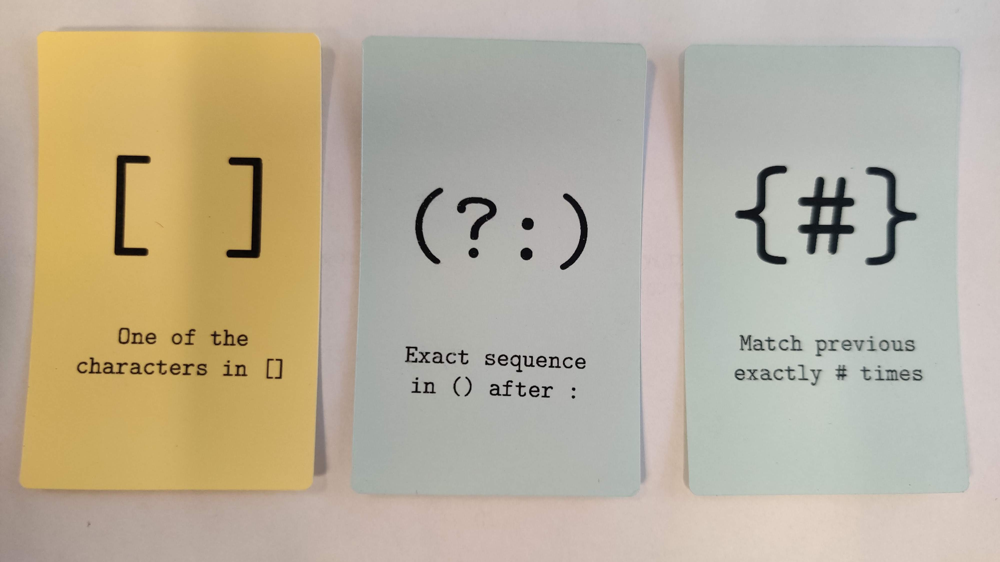
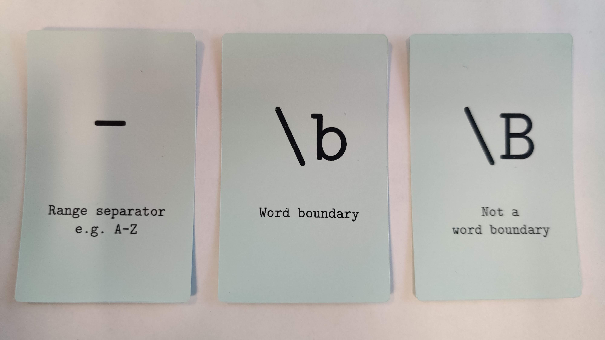
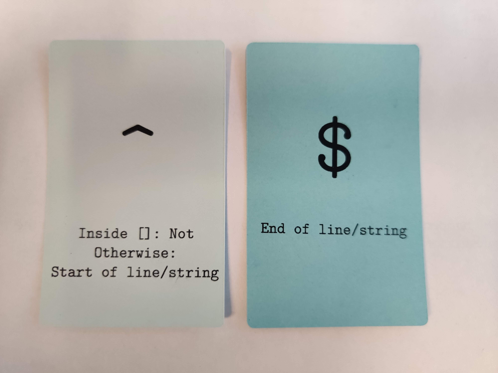

10: Wrangling text
Code
 Demo Notebook
Demo Notebook Demo Data
Demo DataSlides
 PDF Slides
PDF Slides HTML Slides
HTML SlidesDATA 3464: Fundamentals of Data Processing
Wrangling text
Charlotte Curtis October 29, 2026
Topic overview
- Text file formats and character encodings
- Extracting features from (un)structured text
- Regular expressions
Resources used:
What is a text file?
- Any file is just a sequence of bytes
- The file extension is somewhat meaningless
- Text files contain only human-readable characters
- Binary files are everything else, including:
- Images
- PDFs
- Word documents*
- Executables
Character encodings

- To properly read a text file, we need to know its encoding
- Character encodings define how bytes are interpreted
- Turns out this is surprisingly complicated
ASCII
- American Standard Code for Information Interchange (1963)
- 7-bit encoding (128 characters)
- First 32 are control characters (e.g., newline, tab)
- Then punctuation, digits, uppercase letters, lowercase letters
- Most computers use 8-bit bytes, so there’s a whole 128 characters “left over”
This is a very English-centric character set!

Unicode to the rescue
- In the 1980s things were already getting out of hand
- The Unicode consortium published a standard in 1993 that assigned a code point to every character they could think of (297,334 as of Unicode 17.0)
- Currently, the most common encoding is UTF-8
- “Unicode Transformation Format – 8-bit”
- How can 297k characters be represented in only 8 bits?
- The first 128 characters are 1 byte each and align with ASCII
- After that, 2-4 bytes per character are used
There’s also UTF-16 and UTF-32, but now we need to deal with endianness
Line endings
Say we agree to use UTF-8 👍
A text file is still just a big long string of bytes
Humans like things to be orderly and readable with line breaks | System | Abbreviation | Escape sequence | Code point | | ———— | ——————– | ————— | ————- | | Pre-OS X Mac | CR (carriage return) |
\r| U+000D | | Unix | LF (line feed) |\n| U+000A | | Windows | CRLF |\r\n| U+000D U+000A |Result: chaos, but we’ve mostly settled on LF (
\n)
Why am I telling you all this?
- As data scientists, you will need to ingest data from various sources
- You will encounter character encoding and/or line ending issues
- You don’t need to memorize all this, but recognizing that an issue exists will go a long ways towards fixing it
Example: misadventures with “smart” quotes
Portable document format
- The PDF specification was first published in 1993
- PDFs are like a “digital paper” that can contain text, images, vector graphics, and more (like JavaScript, forms, and weirdly, 3D models)
- We use them for all sorts of things because the appearance is consistent
- They are absolutely terrible for pretty much everything else
Some useful PDF packages:
- pdfminer.six: extract text and metadata
- pdfplumber: built on pdfminer.six, layout aware text extraction
- pikepdf: low level PDF manipulation
- pymupdf: more low level PDF manipulation
- and many (many) more!
DATA 3463 covers more about PDFs, including OCR. The main focus in this class is on fixing the issues and dealing with edge case
Hypertext markup language
- Much simpler than PDFs, but still not great for data exchange
- Markup languages are structured text files that define how content should be displayed, but it’s not always consistent
- Most of the internet is UTF-8 encoded HTML
- We can try to extract text with something like BeautifulSoup
- Again, more on web scraping in DATA 3463
Back to text
- Assuming we’ve got text from somewhere, we probably want to:
- Organize it into a structured format (csv, database, json)
- Identify specific features (postal codes, dates, names)
- Need to deal with encoding issues, garbled sentences, mixed up tables, and all the other bizarre ways things go wrong
- There is no magic flowchart for this! Lots of trying things, seeing what happens, dealing with a few edge cases at a time
One really useful tool is regular expressions :hammer:
Regular expressions
The card game?
Note: card groupings and colours are logical where possible, but sometimes just random
Basic characters

“Word” characters

Whitespace

Quantifiers

Brackets and braces

Range and boundary

Start (not) and end

Capturing groups
Seems weird that
(?:...)is so verbose, why not just(...)?Even more common than grouping is capturing:
(...)This lets us save part of the match for later
Examples:
- extract the dollar amount from a $$ string
- extract the area code from a phone number
- extract the domain from an email address
Regex tools
Case study: Cloudflare outage
In July 2019, a poorly formed regex in Cloudflare’s firewall rules caused CPU usage to spike and websites to come crashing down worldwide. The cause? This regex:
(?:(?:\"|'|\]|\}|\\|\d|(?:nan|infinity|true|false|null|undefined|symbol|math)|\`|\-|\+)+[)]*;?((?:\s|-|~|!|{}|\|\||\+)*.*(?:.*=.*)))- Regex engines perform backtracking to check for multiple match possibilities
- This particular string led to catastrophic backtracking
- Moral of the story: test carefully, both positive and negative
Coming up next
- Assignment 3: curate a dataset
- A primer on data cards
- Intro to signals and images